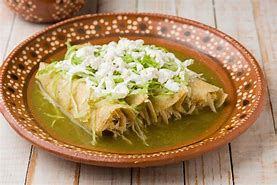

RECEITAS MEXICANAS
Simples, alegre e colorida, a comida mexicana é bem familiar para nós brasileiros. Muito além de tacos com queijo, há petiscos, pratos completos, bebidas e até sobremesas, tudo com a marca do sabor intenso, das mordidas deliciosas e do equilíbrio. Há picância, frescor, acidez, cremosidade e crocância. Escolha suas receitas de comida mexicana preferidas e entre para essa festa de sabores.
vamos cozinhar?
Enchiladas Verdes

Enchiladas Verdes
Dica:
Enchiladas são um prato típico do cozinha mexicana, que em todas as casas estamos acostumados a comê-los. Estes podem ser comidos a qualquer hora do dia, seja na noite do jantar, à tarde na hora da refeição ou na hora que mais desejo, é de manhã como um pequeno-almoço rico e substancial para começar um dia com muita energia.